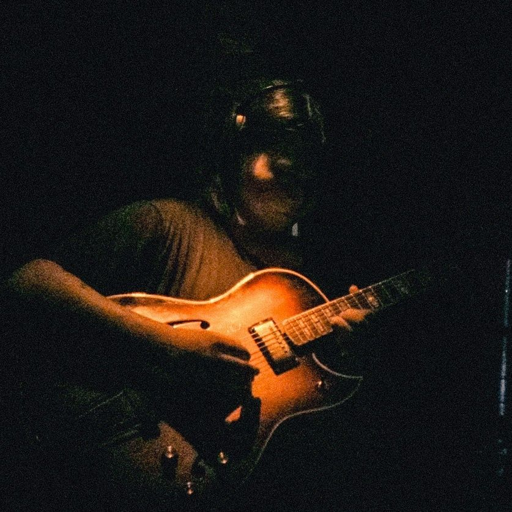

Born in 2006. Composer and guitarist.
Active as a member of Annoyz since 2022,
while also performing as a support musician for
Photolysis and
Zeroshinhō (band set).
Following Annoyz's hiatus in July 2026,
he began his solo career under the name
Yoichi Takada.